Titanic
Theater in Schräglage · Premiere am 9. Mai 2009
«Titanic» verfolgt die Geschichte von Josef und Josefine Arnold aus der Innerschweiz, deren Namen der historischen Passagierliste der dritten Klasse der Titanic entnommen sind. Die beiden jungen Menschen verlassen ihre Heimat, um eine neue Welt zu erkunden. Ihre Reise wird zur Erkundung von Freiheit, Selbstbestimmung und dem unvermeidlichen Schicksal.
Die Darsteller verkörpern verschiedenste Rollen – von Matrosen über italienische Gastarbeiter bis zu britischen Millionären und französischen Musikern. Sie begleiten die Geschichte musikalisch mit Kontrabass, Violine, Akkordeon, Gitarre und Gesang. Das Stück behandelt Hoffnungen, Sehnsüchte, Ehekonflikte und Heimweh.
Das Stück entstand im Rahmen von «Transit 09» der Albert Koechlin Stiftung.
- Spiel
- Franziska Senn, Reto Baumgartner, Roland Kneubühler, Ueli Blum
- Musik
- Roland Kneubühler
- Regie
- Ueli Blum, Adrian Meyer
- Ausstattung
- Valérie Soland
- Licht
- Martin Brun
- Produktionsleitung
- Eva Batz-Deschler
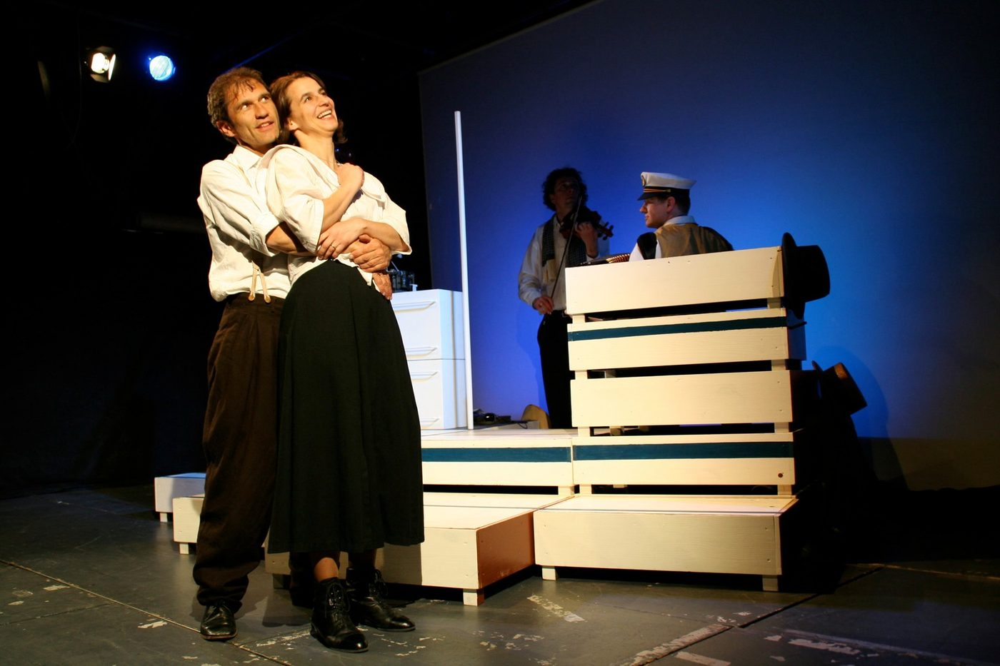
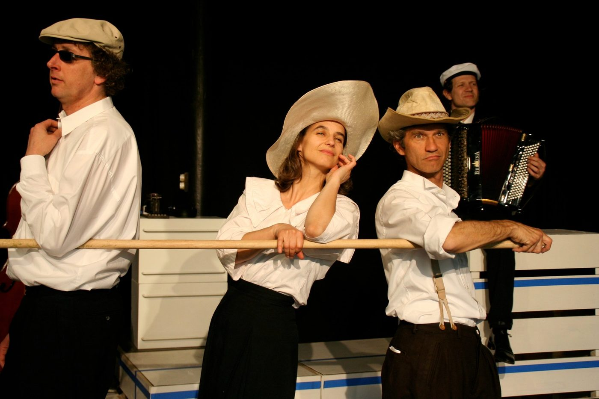
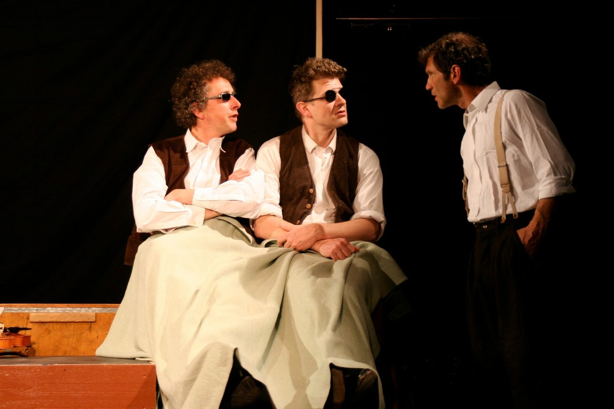
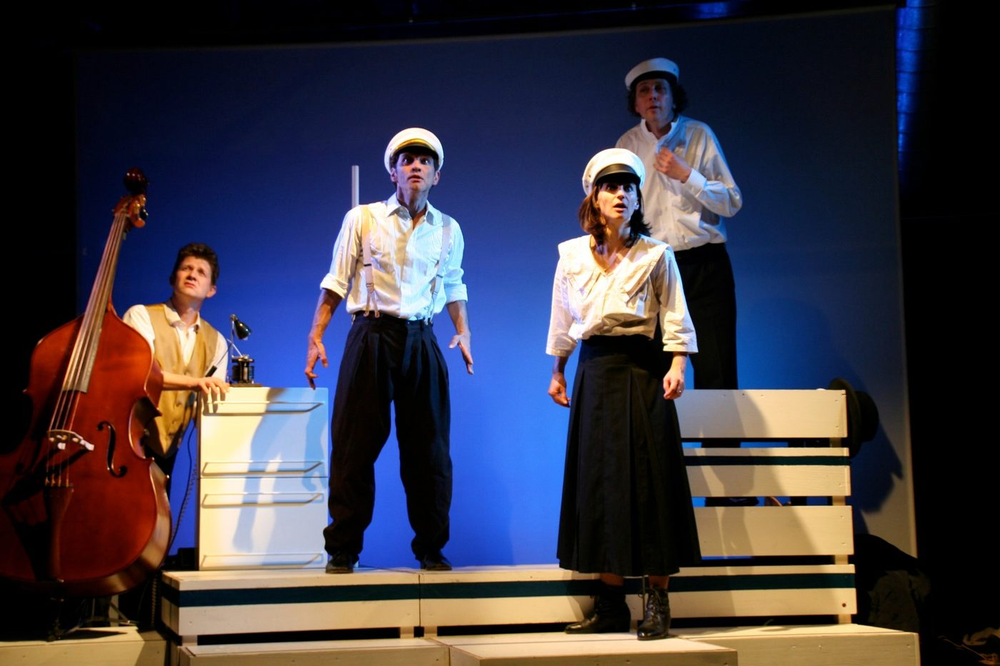
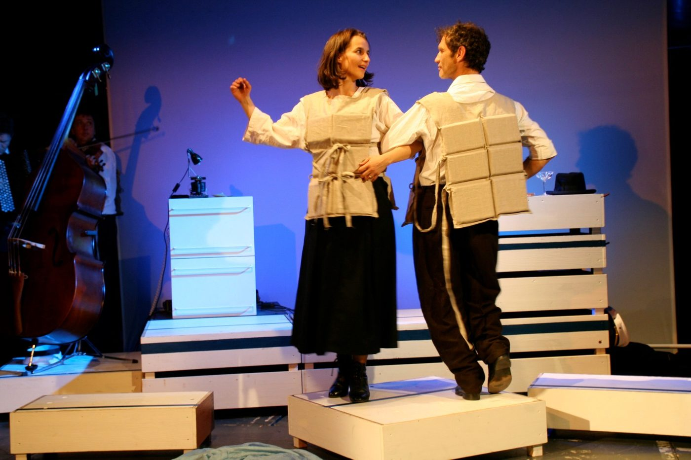
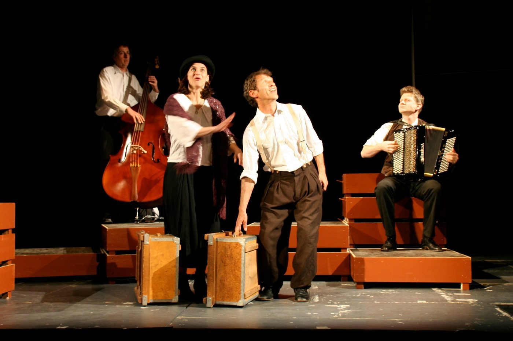

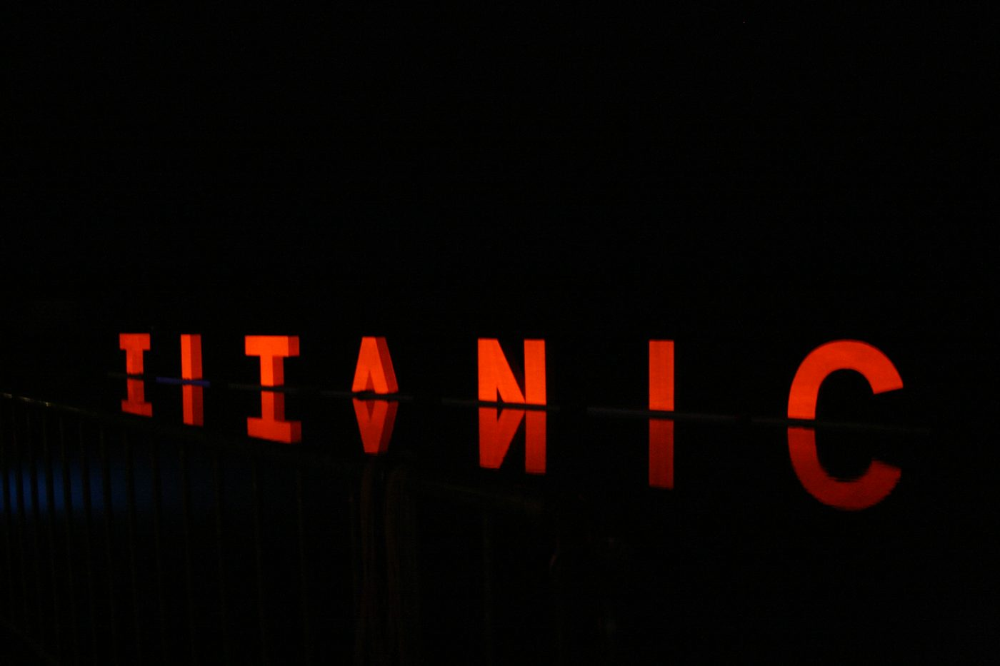
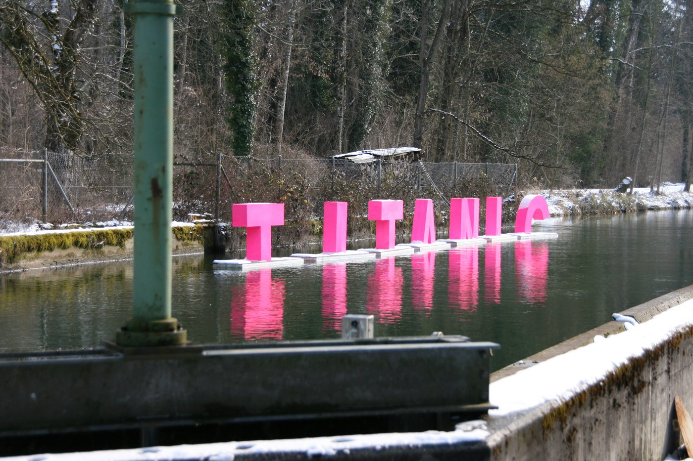
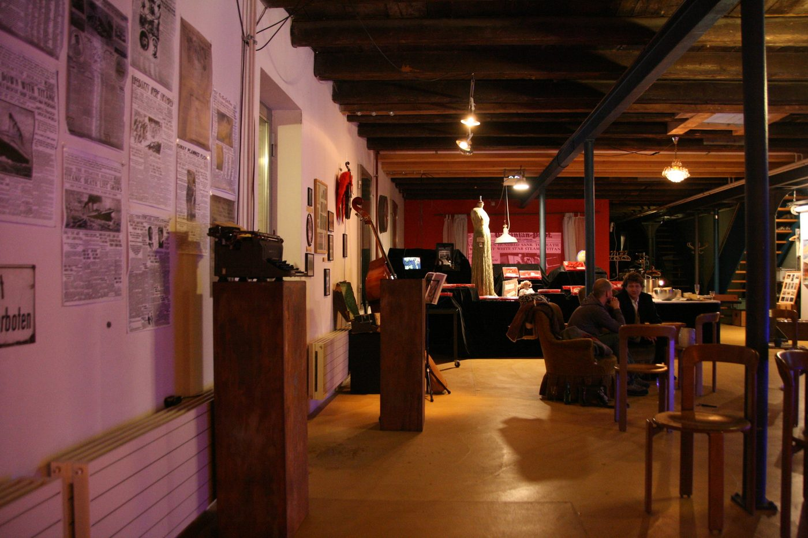
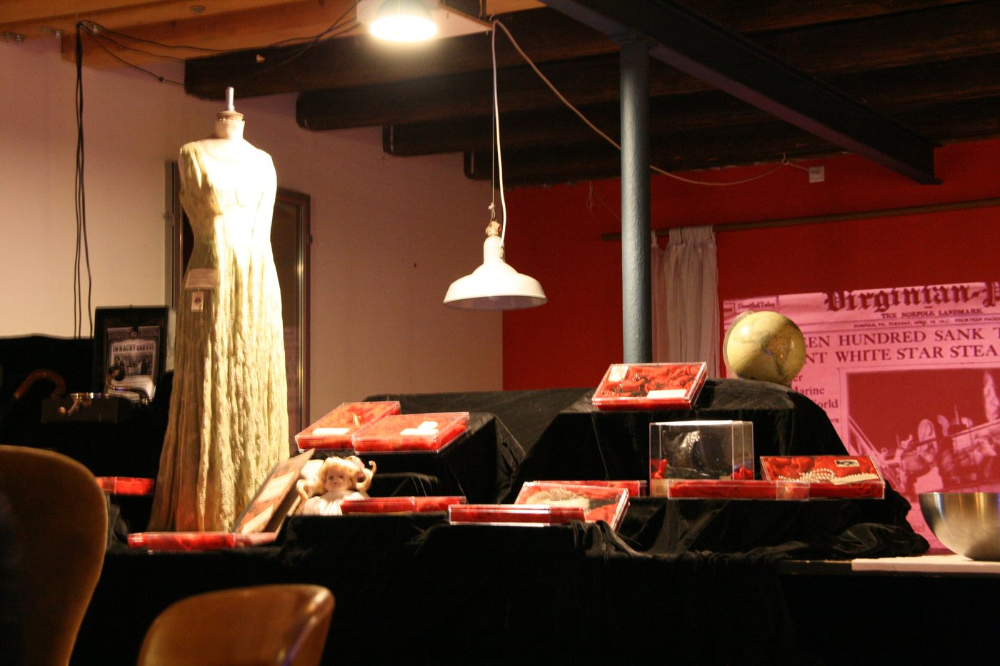
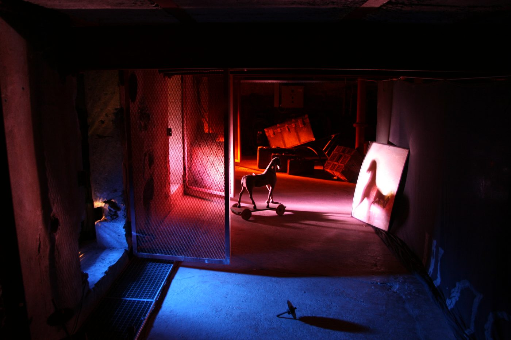